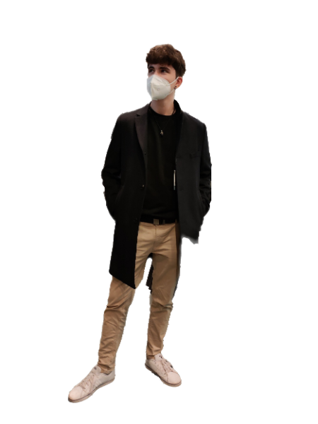

Quiénes Somos
Ahmed Mansur
Está cursando el 2º año del grado medio SMR. Se incorporó a la empresa en 2009. Ha mostrado responsabilidad, perseverancia, trabajo en equipo, capacidad de aprendizaje y de adaptación…

Ángel Camuña Ibáñez
Líder de ANATiC, es un entusiasta en el ámbito de la tecnología y actualmente está cursando 2º de SMR.

Naoufal Boutafah Jebari
Muestra un gran interés y motivación. Actualmente cursando 2º de SMR y su objetivo es ampliar sus conocimientos.